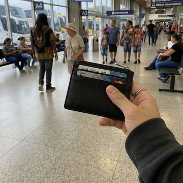

Três passos, sem complicação
Quem perdeu algo está com pressa e preocupado. Por isso o caminho é curto e cada tela faz uma coisa só.
Conte o que perdeu
Cor, marca, modelo, um arranhão, um adesivo. Quanto mais detalhes, melhor. Fotos também ajudam.
Veja os itens parecidos
Assim que você termina, mostramos os achados que combinam com a sua descrição, do mais ao menos parecido.
Combine a devolução
Converse pelo chat anônimo, prove que é seu e escolha como buscar: numa Estação, numa instituição ou num lugar público.
O que você perdeu?
CelularCarteiraChavesFone
Nome do itemCarteira de couro marrom
DetalhesCostura laranja, canto gasto
Ver itens parecidos
Encontramos 3 itens parecidos com a sua carteira.

Carteira de couro marromFURB · hoje, 9h
94%parecido

Carteira preta com zíperRodoviária · 2 dias
63%parecido
Porta-cartões marromShopping Neumarkt · 3 dias
48%parecido
Dono confirmado
Marina (quem achou)Achei hoje cedo na FURB e guardei direitinho.
VocêQue alívio! Posso buscar numa Estação?
Marina (quem achou)Pode sim. Deixo lá até as 18h.
Q7·4K2
Código de retirada na Estação quedi Centro, na Rua XV de Novembro